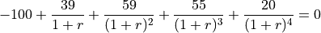
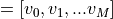
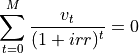

Internal Rate of Return (IRR)
|
Return the Internal Rate of Return (IRR). |
- syse.irr(values, guess=0.1, tol=1e-12, maxiter=100)
Return the Internal Rate of Return (IRR).
This is the “average” periodically compounded rate of return that gives a net present value of 0.0; for a more complete explanation, see Notes below.
decimal.Decimaltype is not supported.- Parameters:
values (array_like, shape(N,)) – Input cash flows per time period. By convention, net “deposits” are negative and net “withdrawals” are positive. Thus, for example, at least the first element of values, which represents the initial investment, will typically be negative.
guess (float, optional) – Initial guess of the IRR for the iterative solver. If no guess is given an initial guess of 0.1 (i.e. 10%) is assumed instead.
tol (float, optional) – Required tolerance to accept solution. Default is 1e-12.
maxiter (int, optional) – Maximum iterations to perform in finding a solution. Default is 100.
- Returns:
out – Internal Rate of Return for periodic input values.
- Return type:
float
Note
The IRR is perhaps best understood through an example (illustrated using np.irr in the Examples section below). Suppose one invests 100 units and then makes the following withdrawals at regular (fixed) intervals: 39, 59, 55, 20. Assuming the ending value is 0, one’s 100 unit investment yields 173 units; however, due to the combination of compounding and the periodic withdrawals, the “average” rate of return is neither simply 0.73/4 nor (1.73)^0.25-1. Rather, it is the solution (for
 ) of the equation:
) of the equation:
-100 + (39/1+r) = 0
In general, for values , irr is the solution of the equation: [G]

Examples
import syse as syse round(syse.irr([-100, 39, 59, 55, 20]), 5) 0.28095 round(syse.irr([-100, 0, 0, 74]), 5) -0.0955 round(syse.irr([-100, 100, 0, -7]), 5) -0.0833 round(syse.irr([-100, 100, 0, 7]), 5) 0.06206 round(syse.irr([-5, 10.5, 1, -8, 1]), 5) 0.0886